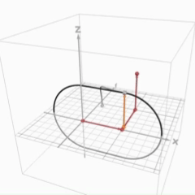
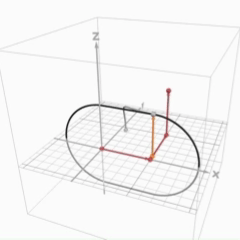

東大理系数学 2018-6
座標空間内の4点 $O(0,0,0),A(1,0,0),B(1,1,0),C(1,1,1)$ を考える。$\dfrac{1}{2} < r < 1$ とする。点 $P$ が線分 $OA,AB,BC$ 上を動くときに点 $P$ を中心とする半径 $r$ の球（内部を含む）が通過する部分を，それぞれ $V_1,V_2,V_3$ とする。
(1) 平面 $y=t$ が $V_1,V_3$ 双方と共有点をもつような $t$ の範囲を与えよ。さらに，この範囲の $t$ に対し，平面 $y=t$ と $V_1$ の共通部分および平面 $y=t$ と $V_3$ の共通部分を同一平面上に図示せよ。
(2) $V_1$ と $V_3$ の共通部分が $V_2$ に含まれるための $r$ についての条件を求めよ。
(3) $r$ は (2) の条件を満たすとする。$V_1$ の体積を $S$ とし，$V_1$ と $V_2$ の共通部分の体積を $T$ とする。$V_1,V_2,V_3$ を合わせて得られる立体 $V$ の体積を $S$ と $T$ を用いて表せ。
(4) ひきつづき $r$ は (2) の条件を満たすとする。$S$ と $T$ を求め，$V$ の体積を決定せよ。
方針、略解
(1)球状のバターをフライパン上で滑らせながら溶かしているイメージです。
(2)最遠点が条件を満たすことが必要十分になります。
(3)あの原理を使いましょう。
(4)シンプルな求積に帰着されたので、定石通り断面を積分。
＞(1)の図示について：本当は2通りありますが、これだけ描けば十分だと思います。(T進の採点基準もこれで満点となっていました)
＞全体的に今回の解答例は「行間多め」です。
動く図解

 

問題の背景
状況把握が難しい求積の問題です。おそらくこの問題の一番ネックな部分は(3)です。丁寧に図を描いてから重なる部分を想像しつつ処理することも出来なくはないですが、相当のセンスを要するでしょう。
これは私の個人的な好みでもありますが、応用性が高く、かつ自然で合理的な解法を紹介しておいた方がタメになると思っているので、今回は $V_1\cup V_2 \cup V_3$ という構造からも想起される「あの」原理についての話をします。
重なりのあるモノの大きさを測るには?
モノ（数学的には集合）がいくつかあるのを想像してみましょう。それは図形や立体（点の集合）だったり、何らかの確率で起こる事象だったり、数列だったり、順列や組合せだったりもします。このときこんな質問をします。
「全てのモノからカブリのないように中身を集めたら、大きさ(※)はいくつになる？」
図形であれば、(※)は和集合の面積／体積のことを言っています。同様に事象であれば和事象の確率、数列や順列であれば個数のことであるのはなんとなくイメージできるでしょう。これらは全て、何らかの意味において「大きさ」を表しています。
仮に重なりがなければ、どの例においてもそれぞれの「大きさ」を足せばそれで終わりです。（確率とかだと排反と呼びますね）
しかし多くの場合、モノとモノは共通部分を持ちます。（円柱が交差していたり、数列に同じ項があったり、事象が排反でなかったり...）そんなとき、「一度足してから共通部分を引く」という方法は数多く目にしたことがあるでしょう。これを定式化したものが、本問でも登場した包除原理です。ベン図を利用して視覚化すると理解が深まると思うので、自分で描いてみることをオススメします。
（本問において $|V_3\cap V_1|$ と $|V_1\cap V_2\cap V_3|$ が打ち消しあった理由も明らかになります！）
包除原理：
$$\begin{align}|A\cup B| \ = \ &|A|+|B|-{\color{yellow}\boldsymbol{|A\cap B|}}\\\\|A\cup B\cup C| \ = \ &|A|+|B|+|C|\\&-{\color{yellow}\boldsymbol{|A\cap B|}}-{\color{yellow}\boldsymbol{|B\cap C|}}-{\color{yellow}\boldsymbol{|C\cap A|}}\\&\qquad+{\color{cyan}\boldsymbol{|A\cap B\cap C|}}\end{align}$$実際に $k=4$ で書き出してみると、解と係数の関係に似た構造を持つことが分かります。
$$\begin{align}|A\cup B\cup C\cup D| \ = \ &|A|+|B|+|C|+|D|\qquad\cdots\qquad(3次の項の係数)\\&-{\color{blue}\boldsymbol{|A\cap B|}}-{\color{blue}\boldsymbol{|A\cap C|}}-{\color{blue}\boldsymbol{|A\cap D|}}-{\color{blue}\boldsymbol{|B\cap C|}}-{\color{blue}\boldsymbol{|B\cap D|}}-{\color{blue}\boldsymbol{|C\cap D|}}\qquad\cdots\qquad(2次の項の係数)\\&\qquad+{\color{red}\boldsymbol{|A\cap B\cap C|}}+{\color{red}\boldsymbol{|A\cap B\cap D|}}+{\color{red}\boldsymbol{|A\cap C\cap D|}}+{\color{red}\boldsymbol{|B\cap C\cap D|}}\qquad\cdots\qquad(1次の項の係数)\\&\qquad\qquad-{\color{purple}\boldsymbol{|A\cap B\cap C\cap D|}}\qquad\cdots\qquad(定数項)\end{align}$$
包除原理は、いかなる概念であっても、それが「モノ」である限りは必ず適用できます。そのため、「カブリ」を持つ概念が出てきてよく分からなくなったら、包除原理が頼れるかもしれません。是非類題等で試してみてください！
類題紹介
実数 $a,b,c$ に対し、関数 $f(a,b,c)=2a-bc-1$ を考える。
ここで、実数 $x,y,z$ に関する条件 $A,B,C,P$ を次のように定める。
$$\begin{cases}A:f(x,y,z)\geqq0\\B:f(y,z,x)\geqq0\\C:f(z,x,y)\geqq0\\P:x+y+z\leqq\frac12\end{cases}$$
以下の条件を満たす座標空間上の点 $(x,y,z)$ の動きうる範囲 $W$ の体積を求めよ。
（条件）： $x,y,z$ はいずれも0以上1以下であり、「 $A$ または $B$ または $C$ または $P$ 」を満たす
（東大模試 改）
包除原理を知らなかった場合、途方もない断面積分に頼るしかなかったであろう。
しかし包除原理を適用するだけで、非常に単純な積分に帰着される。
先述の「オマケ」の通り、解と係数の関係を意識しながら書くと明快。
$$\begin{align}|A\cup B\cup C\cup P| \ = \ &|A|+|B|+|C|+|P|\\&-{\color{blue}\boldsymbol{|A\cap B|}}-{\color{blue}\boldsymbol{|A\cap C|}}-{\color{purple}\boldsymbol{|A\cap P|}}-{\color{blue}\boldsymbol{|B\cap C|}}-{\color{purple}\boldsymbol{|B\cap P|}}-{\color{purple}\boldsymbol{|C\cap P|}}\\&\qquad+{\color{red}\boldsymbol{|A\cap B\cap C|}}+{\color{green}\boldsymbol{|A\cap B\cap P|}}+{\color{green}\boldsymbol{|A\cap C\cap P|}}+{\color{green}\boldsymbol{|B\cap C\cap P|}}\\&\qquad\qquad-{\color{brown}\boldsymbol{|A\cap B\cap C\cap P|}}\\ = \ &3|A|+|P|-{\color{blue}3|A\cap B|}-{\color{purple}3|A\cap P|+{\color{green}3|A\cap B\cap P|}}+{\color{red}|A\cap B\cap C\cap \overline{P}|}\\ = \ &3|A\cap \overline{P}|-3|A\cap B\cap \overline{P}|+|P|+|A\cap B\cap C\cap \overline{P}|\end{align}$$
あとはそれぞれの項について $z=t$ での断面を考えれば、
$$|A\cup B\cup C\cup P|=3|A\cap \overline{B}|+|P|$$
ここまで簡単になる。
（条件）： $(1,\cdots,n)$ の並び替えであって、「 $c_1\neq1$ かつ $c_2\neq2$かつ $\cdots$ かつ$c_n\neq n$ 」が成り立つ
このとき、 $D_n$ が次のように表せることを示せ。
$$D_n=n!\sum_{k=0}^n\frac{(-1)^k}{k!}$$
(有名問題、完全順列)
(1) 区別のある $n$ 個の玉を、区別のある3個の箱に収納する。下の条件を満たすような入れ方は何通りあるか求めよ。
（条件）： 3つの箱のいずれも一つ以上玉が入っている。
すなわち、「1つ目が空き箱でない」かつ「2つ目が空き箱でない」かつ「3つ目が空き箱でない」ということ。
(2) (1)を一般化して、箱の数を $k$ 個とする。（もちろん、これらの箱も区別がある。）
同様の条件を満たす入れ方を $R(n,k)$ とするとき、$R(n,k)$ が次のように表せることを示せ。
$$R(n,k)=\sum_{i=1}^k(-1)^{k-i}{}_kC_ii^n$$
（有名問題、写像12相の「区別区別全射」）
(1) 360以下の正整数であって、360と互いに素であるものはいくつあるかを求めよ。
(2) $n$ 以下の正整数であって、 $n$ と互いに素であるものの個数を $\phi(n)$ とする。
$n$ が $n = p_1^{e_1}p_2^{e_2}\cdots p_k^{e_k}$ ($k$ は正整数、 $p_1,\cdots, p_k$ は相異なる素数、 $e_1,\cdots, e_k$ は正整数) という形で表せるとき、 $\phi(n)$ が次の形で表されることを示せ。
$$\phi(n)=n\left(1-\frac{1}{p_1}\right)\left(1-\frac{1}{p_2}\right)\cdots\left(1-\frac{1}{p_k}\right)$$
(有名問題、オイラーのトーシェント関数)
(一橋大2021)
サイコロを $n$ 回振り、そこまでの出目の総積を $X_n$ とする。 $X_n$ が30で割り切れる確率を求めよ。
（東大2003 改）「 $X_n$ が3で割り切れない」または
「 $X_n$ が5で割り切れない」】
ではない確率を求める。（ドモルガン）